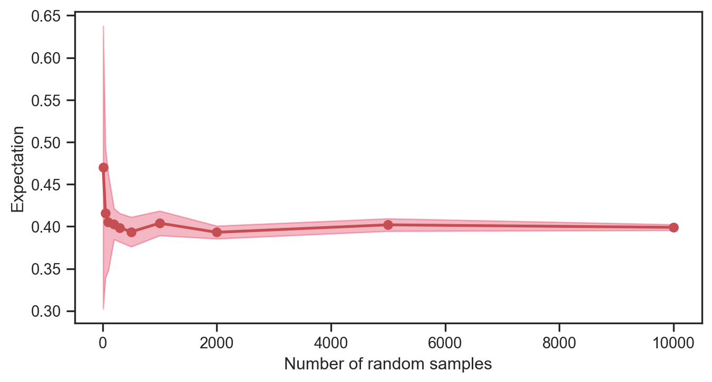

Thus, random values from a Bernoulli distribution are inherently binary, and the number of 0s vs 1s will vary depending on the choice of the parameter, \(p\). We will see later on (in another notebook) how this relatively simple idea can be used to train a Naive Bayes Classifier. For now, we will plot the expected value of the Bernoulli random variable with increasing number of samples.
Code
numbers = [10, 50, 100, 200, 300, 500, 1000, 2000, 5000, 10000]means = []stds = []for j in numbers: X_val = []for q inrange(0, 10): X = bernoulli.rvs(p, size=j) X_val.append(np.mean(X)) means.append(np.mean(X_val)) stds.append(np.std(X_val))means = np.array(means)stds = np.array(stds)numbers = np.array(numbers)fig = plt.figure(figsize=(8,4))plt.plot(numbers, means, 'ro-', lw=2)plt.fill_between(numbers, means + stds, means - stds, color='crimson', alpha=0.3)plt.xlabel('Number of random samples')plt.ylabel('Expectation')plt.savefig('convergence.png', dpi=150, bbox_inches='tight', transparent=True)plt.show()

Binomial
Next, we consider the Binomial distribution. It has a probability mass function
\[
p \left( x \right) = \left(\begin{array}{c}
n\\
x
\end{array}\right)p^{x}\left(1-p\right)^{n-x}
\]
for \(x \in \left\{0, 1, \ldots, n \right\}\) and where \(0 \leq p \leq 1\).
---title: "Discrete distributions"format: html: code-fold: truejupyter: python3fontsize: 1.2emlinestretch: 1.5toc: truenotebook-view: true---## ScopeThis notebook is has useful boiler plate code for generating distributions and visualizing them. ```{python}import numpy as np from scipy.stats import bernoulli, binomimport matplotlib.pyplot as pltimport seaborn as snsfrom scipy.special import combsns.set(font_scale=1.0)sns.set_style("white")sns.set_style("ticks")palette = sns.color_palette('deep')#plt.style.use('dark_background') # cosmetic!```### BernoulliThe probability mass function for a Bernoulli distribution is given by$$p \left( x \right) = \begin{cases}\begin{array}{c}1 - p \; \; \; \textrm{if} \; x = 0 \\p \; \; \; \textrm{if} \; x = 1\end{array}\end{cases}$$for $x \in \left\{0, 1 \right\}$ and where $0 \leq p \leq 1$. ```{python}p =0.4# Bernoulli parameterx = np.linspace(0, 1, 2)probabilities = bernoulli.pmf(x, p)fig = plt.figure(figsize=(8,4))plt.plot(x, probabilities, 'o', ms=8, color='orangered')plt.vlines(x, 0, probabilities, colors='orangered', lw=5, alpha=0.5)plt.xlabel('x')plt.ylabel('Probability')plt.savefig('pdf.png', dpi=150, bbox_inches='tight', transparent=True)plt.show()```One can generate random values from this distribution, i.e., ```{python}X = bernoulli.rvs(p, size=500)print(X)```Thus, random values from a Bernoulli distribution are inherently binary, and the number of 0s vs 1s will vary depending on the choice of the parameter, $p$. We will see later on (in another notebook) how this relatively simple idea can be used to train a *Naive Bayes Classifier*. For now, we will plot the expected value of the Bernoulli random variable with increasing number of samples. ```{python}numbers = [10, 50, 100, 200, 300, 500, 1000, 2000, 5000, 10000]means = []stds = []for j in numbers: X_val = []for q inrange(0, 10): X = bernoulli.rvs(p, size=j) X_val.append(np.mean(X)) means.append(np.mean(X_val)) stds.append(np.std(X_val))means = np.array(means)stds = np.array(stds)numbers = np.array(numbers)fig = plt.figure(figsize=(8,4))plt.plot(numbers, means, 'ro-', lw=2)plt.fill_between(numbers, means + stds, means - stds, color='crimson', alpha=0.3)plt.xlabel('Number of random samples')plt.ylabel('Expectation')plt.savefig('convergence.png', dpi=150, bbox_inches='tight', transparent=True)plt.show()```### Binomial Next, we consider the Binomial distribution. It has a probability mass function $$p \left( x \right) = \left(\begin{array}{c}n\\x\end{array}\right)p^{x}\left(1-p\right)^{n-x}$$for $x \in \left\{0, 1, \ldots, n \right\}$ and where $0 \leq p \leq 1$. ```{python}p =0.3# Bernoulli parametern =7x = np.arange(0, n+1)probabilities = binom(n, p)fig = plt.figure(figsize=(8,4))plt.plot(x, probabilities.pmf(x), 'o', ms=8, color='deeppink')plt.vlines(x, 0, probabilities.pmf(x), colors='deeppink', lw=5 )plt.xlabel('x')plt.ylabel('Probability')plt.savefig('pdf_2.png', dpi=150, bbox_inches='tight', transparent=True)plt.show()```To work out the probability at $x=3$, we can compute:```{python}prob = comb(N=n, k=3) * p**3* (1- p)**(n -3)print(prob)```